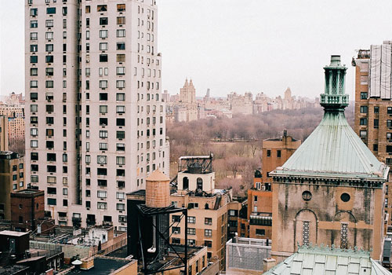
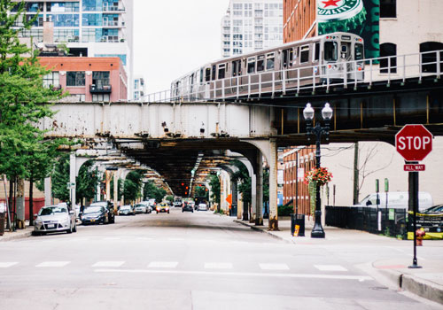
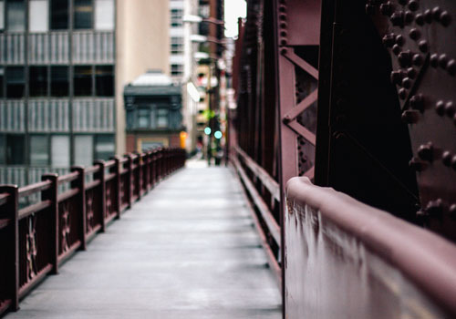

أبرز المشاريع

مرفق سياحي
تصور معماري لمرفق سياحي يركز على الراحة البصرية وسهولة الحركة وتكامل الخدمات التشغيلية.

مجمع تجاري
تنظيم فراغات تجارية قابلة للتأجير مع توزيع ذكي للواجهات والخدمات لرفع كفاءة الاستخدام اليومي.

إدارة مشروع متكاملة
تنسيق بين التصميم والتنفيذ والاعتماد لضمان خروج المشروع في المسار الزمني والمالي المخطط له.

مخطط استثماري
اقتراحات لمشروع استثماري مرن يدعم التوسع المرحلي ويعتمد على قراءة واضحة للسوق والجدوى.